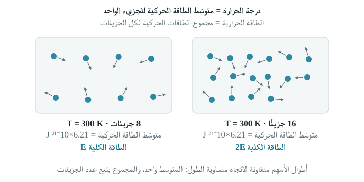

الطاقة الحرارية
Thermal energy
مجموع الطاقات الحركية للجزيئات في نظام (والكامنة الجزيئية في المواد الحقيقية)، وهي خاصية شاملة تتضاعف مع الكتلة. للغاز المثالي أحادي الذرة U = (3/2)nRT، فتساوي صفرًا عند الصفر المطلق ولا تساوي درجة الحرارة أبدًا.
الطاقة الحرارية هي المحصّلة لا المتوسط. إذا كان في الصندوق N جزيء ولكل جزيء طاقة حركية E_k، فالطاقة الحرارية للنظام تساوي مجموعها، وهي بذلك تتضاعف إذا ضاعفنا الكمية عند ثبات درجة الحرارة. هذا هو الفرق البنيوي عن درجة الحرارة: الأولى جمع، والثانية قسمة على عدد الجزيئات.
في الغاز المثالي أحادي الذرة تُختزل الطاقة الحرارية في الحركة الانتقالية، فيصير U = (3/2)nRT. في الجزيئات متعدّدة الذرات تُضاف طاقات الدوران والاهتزاز، وفي السوائل والأجسام الصلبة تُضاف الطاقة الكامنة الناتجة عن قوى التجاذب بين الجزيئات، ولهذا تكون السعة الحرارية للماء عالية جدًّا: كيلوغرام منه يستوعب 4.18 كيلوجول لكل كلفن، أي أكثر من أربعة أضعاف ما يستوعبه كيلوغرام من الهواء عند ثبات الحجم.
الآلية
كيف يحدث الأمر على مستوى الجسيمات أو المتغيّرات المباشرة
الطاقة الحرارية تُبنى من الطاقات الفردية: عند تسخين نظام لا تُرفع سرعة كل الجزيئات بالتساوي، بل ينتقل جانب من الطاقة إلى أنماط حركة جديدة. في الجزيء ثنائي الذرة تُشغَّل الدوران ثم الاهتزاز عند درجات حرارة أعلى، وكل نمط حركة يستهلك طاقة دون أن يرفع السرعة الانتقالية، فيرتفع مخزون الطاقة الحرارية أكثر مما تتوقّعه المعادلة الانتقالية وحدها. وفي السوائل تتحوّل نسبة من الحرارة إلى كسر روابط هيدروجينية عند التبخير، فتُخزَّن طاقة كامنة لا تُظهرها الزيادة في درجة الحرارة إطلاقًا.
الأرقام والوحدات
العلاقات والوحدات والنطاقات العددية التي تسند الشرح
للغاز المثالي أحادي الذرة U = (3/2)nRT: مول واحد عند 298 K يساوي 3.72 كيلوجول، ومولان عند الحرارة نفسها 7.43 كيلوجول. الماء: حرارة نوعية 4.18 kJ/(kg·K)، وحرارة انصهار كامنة 334 kJ/kg، وحرارة تبخير 2260 kJ/kg — فالانتقال الطوري يخزّن طاقة أكبر بمراتب من رفع الدرجة. وحدتها الجول، وتُقاس عمليًّا بالسعر (1 cal = 4.184 J) في الأدبيات الغذائية والتاريخية، وبالواط·ساعة للأنظمة الكبيرة (1 kWh = 3.6 MJ).
الفرق الدقيق
المفهوم الملتبس الذي يُخلَط به، وأين ينفصلان
ثلاثة مفاهيم تُخلَط: الطاقة الحرارية حالة مخزونة في النظام (تشمل طاقة الجزيئات الحركية والكامنة)، والحرارة عملية انتقال عبر فرق حرارة وتُقاس بالجول لكنها لا تُخزَّن، والعمل انتقال طاقة منظّم عبر قوة وإزاحة. القانون الأول يربطها: ΔU = Q − W، فالحرارة والعمل طريقتان لتغيير الطاقة الحرارية لا نوعان منها. ويضاف تمييز رابع مهم في الهندسة: طاقة النظام كلها لا تُحوَّل إلى عمل، والجزء المتاح يُقاس بالإكسِرجي ويحدّه القانون الثاني ودرجة حرارة المنبع البارد.
حدود التعريف
أين ينكسر التعريف أو النموذج وما الذي لا يفسّره
مصطلح «الطاقة الحرارية» فضفاض في المراجع الهندسية؛ تُستعمل أحيانًا مرادفًا للطاقة الداخلية U، وهي ليست كذلك في الأنظمة المفتوحة أو المتفاعلة كيميائيًّا، حيث يضم U الطاقة الكيميائية والنووية أيضًا. ولا تُعرَّف للنظام غير المتوازن تعريفًا عدديًّا واحدًا لأن الحرارة والضغط قد يختلفان موضعيًّا. وعند الأجسام الصلبة جدًّا أو الدرجات القريبة من الصفر المطلق تنهار الصورة الكلاسيكية وتلزم إحصاءات الكمّ، فتصير السعة الحرارية دالة على درجة الحرارة نفسها وتؤول إلى الصفر (قانون ديباي الثالث).


| الكمية | القيمة | المصدر |
|---|---|---|
| الطاقة الحرارية لمول غاز أحادي الذرة عند 298 K | 3.72 كيلوجول | [1] |
| الحرارة النوعية للماء | 4.18 كيلوجول/(كيلوغرام·كلفن) | [2] |
| حرارة التبخير الكامنة للماء عند 100 °C | 2260 كيلوجول/كيلوغرام | [2] |
| معامل تحويل السعر إلى جول | 4.184 جول/سعر | [3] |
المصادر
- 1 Thermal energy — Encyclopaedia Britannica. www.britannica.com/science/thermal-energy · اطُّلع عليه 2026-11-13
- 2 Heat of vaporization / specific heat — water — Encyclopaedia Britannica. www.britannica.com/science/heat · اطُّلع عليه 2026-11-13
- 3 Internal energy — HyperPhysics, Georgia State University. hyperphysics.phy-astr.gsu.edu/hbase/thermo/inteng.html · اطُّلع عليه 2026-11-13
- 4 Temperature — Encyclopaedia Britannica. www.britannica.com/science/temperature · اطُّلع عليه 2026-11-13
استشهد بهذا المصطلح
الصيغتان مبنيتان من بيانات الصفحة نفسها: العنوان والتاريخ ورابط النسخة المنشورة.
الطاقة الحرارية — Thermal energy. (2026). ديوان المعرفة — انفراد. https://infiradev.com/diwan/terms/thermal-energy.html
@misc{thermal-energy2026,
title = {الطاقة الحرارية},
titleaddon = {Thermal energy},
howpublished = {{ديوان المعرفة — انفراد} — مرجع علمي عربي},
year = {2026},
url = {https://infiradev.com/diwan/terms/thermal-energy.html},
urldate = {2026-11-16},
note = {مراجعة علمية: عبدالله الهويدي — مراجعة في تطبيق انفراد}
}
راجعه: عبدالله الهويدي — مراجعة في تطبيق انفراد · 2026-11-16 · آخر تحديث 2026-11-16